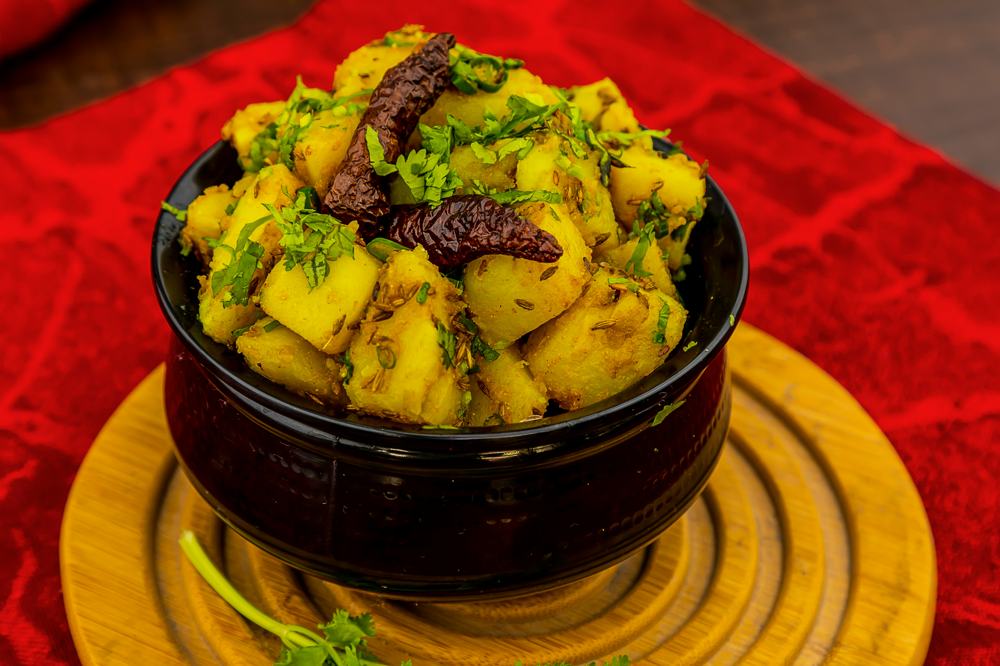

aloojeera
HOME

Aloo Jeera
Aloo Jeera is a simple and flavorful Indian potato dish made with boiled potatoes, cumin seeds, and aromatic spices. Lightly sauteed until golden and fragrant, it offers a perfect balance of earthy flavors and mild heat. This comforting vegetarian dish is commonly served with chapati, puri, or rice and is a popular choice for everyday meals
Ingridients
- 4 medium potatoes, boiled and cubed
- 2 tbsp vegetable oil or ghee
- 2 tsp cumin seeds (jeera)
- 1 green chili, finely chopped (optional)
- ½ tsp turmeric powder
- ½ tsp red chili powder
- 1 tsp coriander powder
- Salt, to taste
- 2 tbsp fresh cilantro, chopped
- 1 tsp lemon juice (optional)
STEPS
- Boil the potatoes until tender
- Heat the oil or ghee
- Add the cummin seeds
- Add green chili
- stir in the tumeric,red chili powder,corriander powder and salt
- add the cubed potatoes
- Cook for 5-7 minutes
- Add lemon juice
- Garnish with fresh cilantro